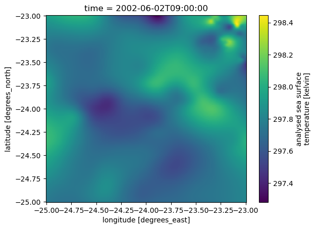
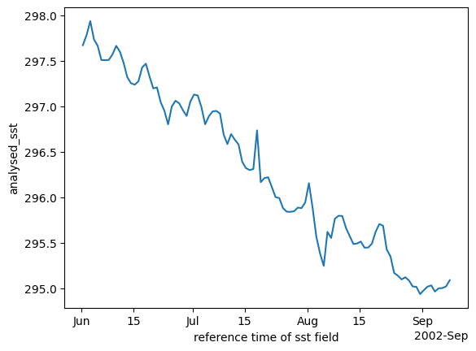

import earthaccess
import xarrayCreating virtual data sets
📘 Learning Objectives 1. Create a big data cube faster without creating a file set
Overview
If we have many many files (granules), then running earthaccess.open(results) is going to be very slow. Let’s use earthaccess.open_virtual_mfdataset() instead to create our metadata for xarray.
results = earthaccess.search_data(count=100, short_name="MUR-JPL-L4-GLOB-v4.1")
len(results)100Create a virtual representation of the data.
%%time
ds = earthaccess.open_virtual_mfdataset(
results,
access="direct",
load=True,
concat_dim="time",
coords="all",
compat="override",
combine_attrs="drop_conflicts",
)
dsCPU times: user 7.24 s, sys: 502 ms, total: 7.74 s
Wall time: 13.4 s<xarray.Dataset> Size: 2TB
Dimensions: (time: 100, lat: 17999, lon: 36000)
Coordinates:
* lat (lat) float32 72kB -89.99 -89.98 -89.97 ... 89.98 89.99
* lon (lon) float32 144kB -180.0 -180.0 -180.0 ... 180.0 180.0
* time (time) datetime64[ns] 800B 2002-06-01T09:00:00 ... 2002...
Data variables:
analysed_sst (time, lat, lon) float64 518GB dask.array<chunksize=(1, 1023, 2047), meta=np.ndarray>
analysis_error (time, lat, lon) float64 518GB dask.array<chunksize=(1, 1023, 2047), meta=np.ndarray>
mask (time, lat, lon) float32 259GB dask.array<chunksize=(1, 1447, 2895), meta=np.ndarray>
sea_ice_fraction (time, lat, lon) float64 518GB dask.array<chunksize=(1, 1447, 2895), meta=np.ndarray>
Attributes: (12/41)
Conventions: CF-1.5
title: Daily MUR SST, Final product
summary: A merged, multi-sensor L4 Foundation SST anal...
references: http://podaac.jpl.nasa.gov/Multi-scale_Ultra-...
institution: Jet Propulsion Laboratory
history: created at nominal 4-day latency; replaced nr...
... ...
project: NASA Making Earth Science Data Records for Us...
publisher_name: GHRSST Project Office
publisher_url: http://www.ghrsst.org
publisher_email: ghrsst-po@nceo.ac.uk
processing_level: L4
cdm_data_type: gridprint(f"{mur.nbytes / 1e12} Tb")1.814299416796 Tbds<xarray.Dataset> Size: 2TB
Dimensions: (time: 100, lat: 17999, lon: 36000)
Coordinates:
* lat (lat) float32 72kB -89.99 -89.98 -89.97 ... 89.98 89.99
* lon (lon) float32 144kB -180.0 -180.0 -180.0 ... 180.0 180.0
* time (time) datetime64[ns] 800B 2002-06-01T09:00:00 ... 2002...
Data variables:
analysed_sst (time, lat, lon) float64 518GB dask.array<chunksize=(1, 1023, 2047), meta=np.ndarray>
analysis_error (time, lat, lon) float64 518GB dask.array<chunksize=(1, 1023, 2047), meta=np.ndarray>
mask (time, lat, lon) float32 259GB dask.array<chunksize=(1, 1447, 2895), meta=np.ndarray>
sea_ice_fraction (time, lat, lon) float64 518GB dask.array<chunksize=(1, 1447, 2895), meta=np.ndarray>
Attributes: (12/41)
Conventions: CF-1.5
title: Daily MUR SST, Final product
summary: A merged, multi-sensor L4 Foundation SST anal...
references: http://podaac.jpl.nasa.gov/Multi-scale_Ultra-...
institution: Jet Propulsion Laboratory
history: created at nominal 4-day latency; replaced nr...
... ...
project: NASA Making Earth Science Data Records for Us...
publisher_name: GHRSST Project Office
publisher_url: http://www.ghrsst.org
publisher_email: ghrsst-po@nceo.ac.uk
processing_level: L4
cdm_data_type: gridIn the future, we should be able to do something like this if a DAAC pre-creates the metadata for us.
import earthaccess mapper = earthaccess.get_virtual_reference( short_name = ‘MUR-JPL-L4-GLOB-v4.1’ ) # will return the virtual data cube, already assembled by a DAAC ds = xr.open_dataset(mapper, engine=“zarr”, chunks={}, backend_kwargs={“consolidated”: False})
ds_sub = ds["analysed_sst"].sel(lon=slice(-25,-23), lat=slice(-25,-23))ds_sub.isel(time=1).plot()
Create daily means.
ds_mean = ds_sub.sel(time="2002").mean(dim=['lat', 'lon'])ds_mean.plot();
Summary
We learned how to use open_virtual_dataset with earthaccess to make a data cube faster than with earthaccess.open().